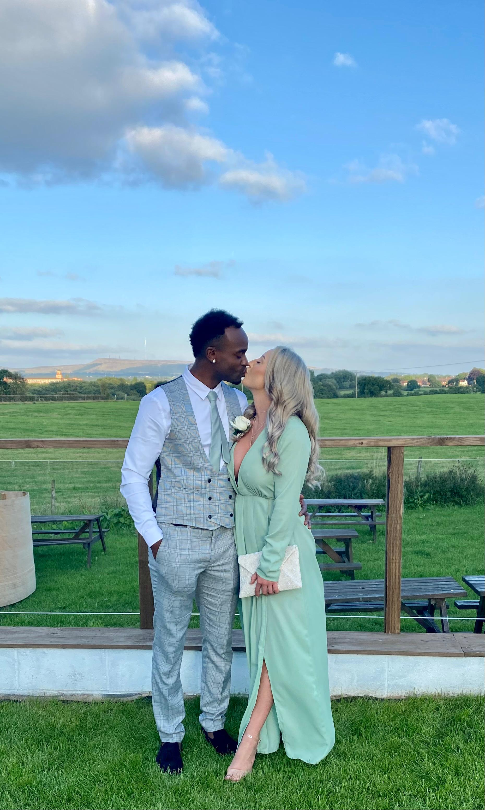

The Introduction
Right in the middle of COVID
Their story began in the middle of COVID, when Hannah and Byron first met. Byron then spent the hour talking about anime on their first date and somehow, that was the beginning of their very own fairytale.